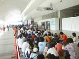
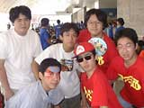
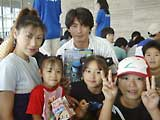
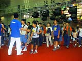
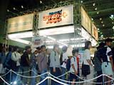

| ＮＩＮＴＥＮＤＯスペースワールド２０００開場直前！ |
|  8月25日（金）から27日（日）まで開催される『ＮＩＮＴＥＮＤＯスペースワールド2000』。会場である千葉県の幕張メッセには開場前からたくさんの人が行列を作っていました。来場者は『ポケットモンスター金・銀』のポケモン、セレヴィがもらえるということで、みなさんの熱気もムンムン。 |
|  一番乗りは松本倫久クン、黒木翔クン、小口宏樹クン、船見翔吾クン、満村郁身クン、有働隼人クンの６人グループ。彼らはインターネットで知り合った「スマブラ部」の仲間たち。スマブラ部ということは……そう！ 任天堂のソフト『スマッシュブラザーズ！』のファンクラブなんですね。感激、感激。松本クンは東京から、ほかの仲間たちは千葉県のいろんな場所から集まってきたんだって。今日のお目当ては？と聞くと、「ゲームボーイアドバンス！」という元気な答えが。みんな、新ハードに興味シンシンなんですね。 |
|  列の中央くらいに並んでいたのは埼玉から来た木部さんご一家。お父さんの木部了大（のりまさ）さん、お母さんの了己（りょうお）さん、了也（りょうや）くん、了乙入（あおい）ちゃん、了弓（りく）ちゃんです。了也くん、了乙入ちゃんは双子です。この日は５時に家を出てきたそう。木部ファミリーのお目当てはセレビィのプレゼント。一番年下の８歳の了弓ちゃんも含め、家族そろってポケモンが大好きなんですって。「去年はミュウをゲットしたので今年もがんばります！」とお母さん。とっても仲良しなご家族でした。 |
予想以上の盛り上がりに、時間を繰り上げての開場となったこの日。ファンのみなさんのアツ〜い気持ちがこちらにもヒシヒシ伝わってきました。
|
| ＮＩＮＴＥＮＤＯスペースワールド２０００ついに開場！ |
 8月25日8時45分。予定より15分早く、20世紀最後のＮＩＮＴＥＮＤＯスペースワールド開場しました。
待ちわびていた来場者の皆さんが、スタッフの誘導のもと次々とエントランスゲートをくぐり、人の波がゆっくりと会場の中に広がっていきます。 |
|  ほとんどの人が最初に向かった先は、やはりゲームボーイアドバンスの体験コーナー。とくに「マリオカートアドバンス」は大人気！ 15分もしないうちに、長蛇の列となりました。そのほか、お目当てのゲームソフト体験コーナーに並ぶ人、、物販コーナーに走る人、セレビィプレゼントコーナーに向かうお子さん……。皆さん、それぞれお目当てがあったみたいですね。 |
開場から30分たっても、人の波は途切れることなく次々と流れていきます。楽しいイベントや話題のゲームが目白押しですので、みんな、夏休み最後の楽しい思い出を作ってくださいね。
|